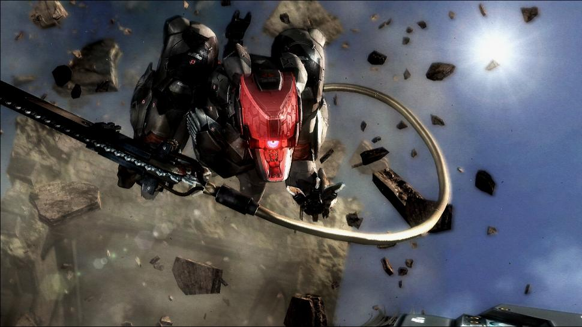
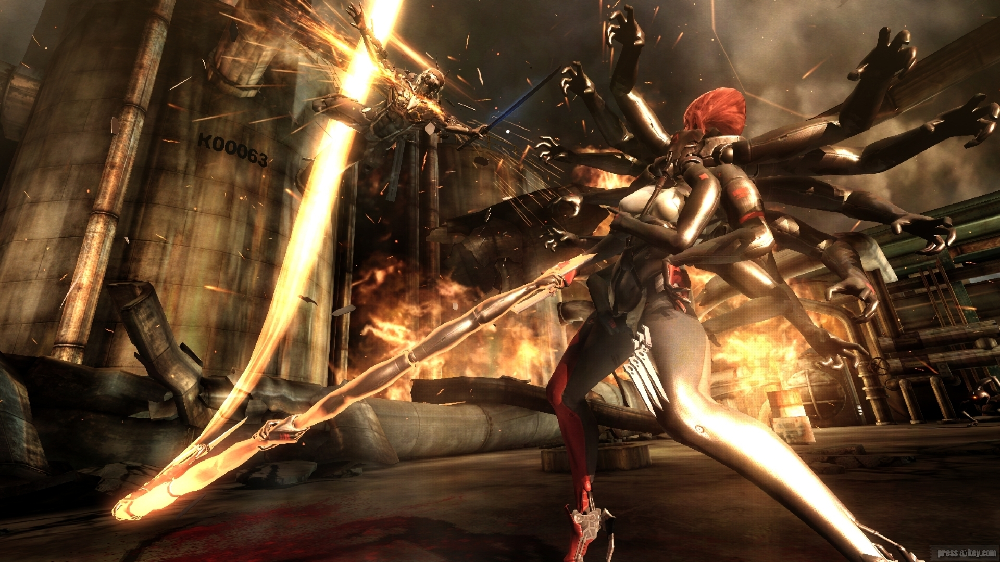
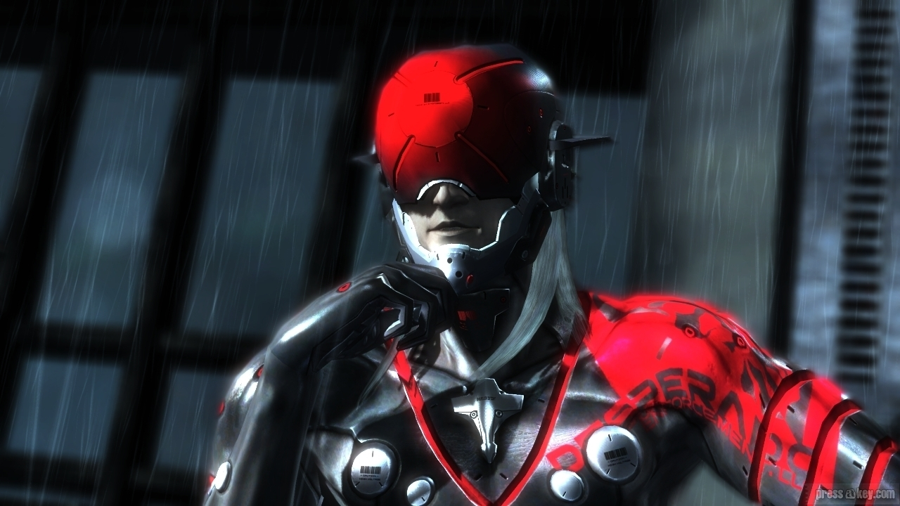
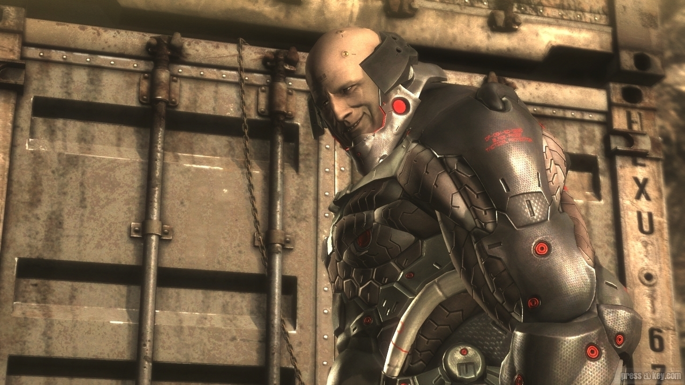
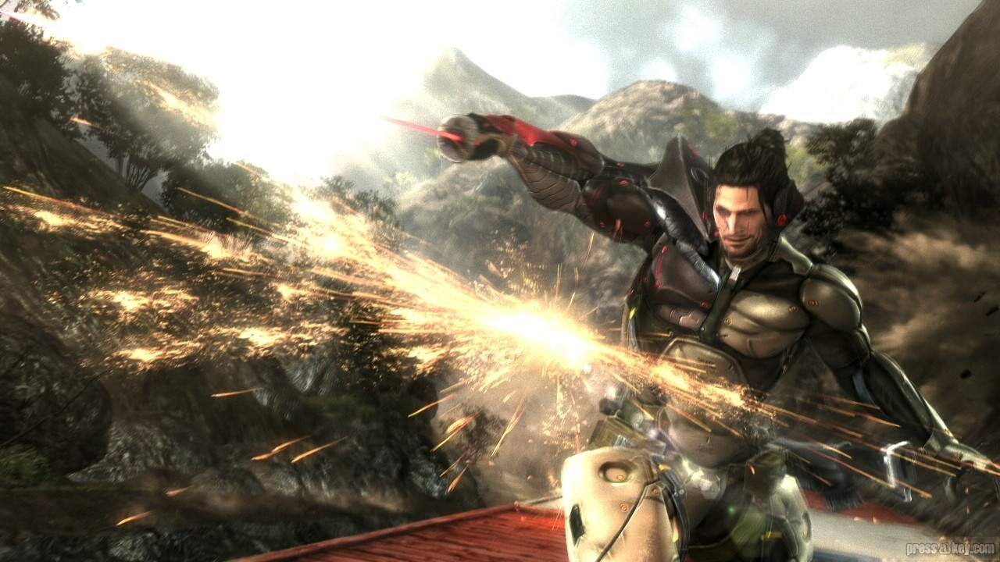
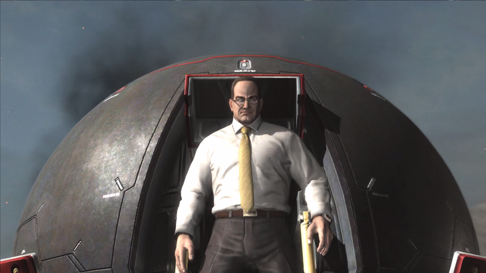

MG Ray
The new RAY was an UG (Unmanned Gear), meaning it was controlled by an internal or external AI instead of a human operator. Improvements in technology led to RAY's original synthetic muscle actuators being replaced with carbon nanotube (CNT) muscle fibers, saving significant internal mass; this opportunity was used to equip the RAY with both improved sensor systems and a vastly increased arsenal of weapons. Rigid armor was laid over the CNT core to provide additional protection. The new design featured the blocky thighs of the mass-produced RAY models from earlier conflicts, but a tail even longer than that of the prototype and a redesigned head with multiple compounded eye sensors.
BladeWolf
Blade Wolf, or simply Wolf, officially designated IF Prototype LQ-84i (IF standing for "Interface"), is a wolf-like quadrupedal Unmanned Gear with a learning optical neuro-AI and a prototype verbal interface. Known weapons systems included a chainsaw attached to his back that could be used to cut opponents, spring loaded HF knives, a rail gun, as well as extendable claws. His tail also acted as a manipulator arm similar to that of the Gekko units. It was once referred to informally as the K-9000 due to its appearance, which also resembled the battle suit of Crying Wolf. Similar unmanned gears called Fenrirs existed as well, apparently being mass-produced models of LQ-84i.
Blueprints for LQ-84i were downloaded into Raiden, an agent for the PMSC Maverick Security Consulting, Inc., during or prior to being severely injured in a mission. Maverick later recovered the cluster file via Raiden's arm, although they not only had to input a password to bypass the encryption process, but also enact an override system in the process.
Mistral
Mistral was a female cyborg mercenary and a member of Desperado Enforcement LLC. Mistral was one of the Winds of Destruction, alongside Sundowner and Monsoon. Her code-name is derived from the dry northern winds that blow from the Alps to the Mediterranean. Mistral used multiple copies of her main weapon called "L'Étranger" (French for "Stranger") in whip and rod configurations and could easily rebuild a new one at ease. Outside of combat operations, she wore a black and violet coat with pauldrons, which she removed before engaging Raiden.
Monsoon
Monsoon was a Cyborg Ninja and a member of Desperado Enforcement LLC. He was one of the Winds of Destruction alongside Sundowner and Mistral, and was named after the seasonal wind systems that occur in West Africa and Asia-Australia. Monsoon was capable of magnetically dislocating his entire body to attack from a distance, and wielded Sai weapons called "Dystopia", which were enhanced via magnetic fields. He also seemed to believe that the point of humans was to fight, be consumed with greed and kill, which was based on his childhood in Cambodia. He was fluent in Khmer, Chinese, and English. Unlike the other Winds of Destruction, he wasn't a former member of any military or paramilitary organizations prior to enlisting with the group. Instead, he was a former gang member.
Sundowner
Sundowner was a cyborg mercenary who served as the de facto leader of the PMSC Desperado Enforcement LLC. during their activities in 2018, as well as a member of the Winds of Destruction, alongside Mistral and Monsoon. His name was derived from the wind condition that occurs in Southern California. Donning a specialized custom cyborg body, the immense Sundowner wielded two high-frequency machetes known as "Bloodlust." In addition, the two machetes could also be merged into a scissors-like contraption to cause further damage to the enemy.
Jetstream Sam
Samuel Rodrigues, also known as Jetstream Sam and Minuano, was a cyborg mercenary involved with the Desperado PMC group who fought against Raiden during the events of 2018. He was a Brazilian master swordsman of the "Rodrigues New Shadow School" technique, which had derived from the "Yagyu Shinkage-ryu" (Yagyu New Shadow School) of Japan.
Senator Armstrong
Steven Armstrong was a United States Senator representing the U.S. state of Colorado, as well as a candidate for the 2020 United States presidential election.[2] He was also the benefactor for World Marshal Inc., its de facto CEO, and its most powerful warrior. He was also allied with the Winds of Destruction of Desperado Enforcement LLC.
An extremely nationalistic, patriotic and libertarian individual, Armstrong often expressed the desire to "reclaim the American dream" by instigating another American Revolution after Liquid Ocelot's insurrection and the Patriots' actions that weakened America.